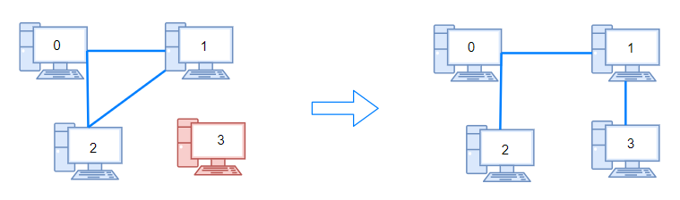
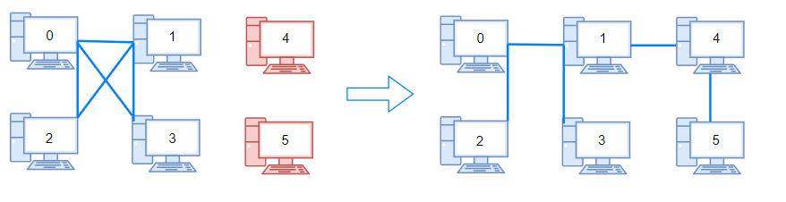

1319. 连通网络的操作次数
并查集数连通分量 parts：答案是 parts−1（每挪一根线缆最多把两个分量并为一个）；线缆不够 n−1 根直接返回 -1。
思路
- 并查集逐条合并
connections，最后数根结点个数得到连通分量parts。 - 答案是
parts - 1：每根线缆挪个位置最多把两个分量连成一个，分量数最多减 1。 - 先判
connections.length < n - 1：连成一棵树都要 n−1 根，不够就返回-1。 - 合并时发现两端已同根，说明这根是环上的冗余线缆（可拆去救别的分量）；
find用路径减半防退化。
图解
最优解
1import java.util.*;2 3class Solution {4 private int[] pa;5 6 public int makeConnected(int n, int[][] connections) {7 if (connections.length < n - 1) return -1; // 连成一棵树都要 n-1 根，线缆不够必失败8 pa = new int[n];9 for (int i = 0; i < n; i++) pa[i] = i;10 for (int[] c : connections) union(c[0], c[1]);11 int parts = 0;12 for (int i = 0; i < n; i++) if (find(i) == i) parts++; // 数连通分量13 return parts - 1; // 每挪一根线缆最多把两个分量并为一个14 }15 16 private void union(int a, int b) {17 int ra = find(a), rb = find(b);18 if (ra == rb) return; // 已连通：这是环上的冗余线缆，可以拆去救别的分量19 pa[ra] = rb;20 }21 22 private int find(int x) {23 while (pa[x] != x) {24 pa[x] = pa[pa[x]]; // 路径减半，防止树退化成链25 x = pa[x];26 }27 return x;28 }29}题目
用以太网线缆将 n 台计算机连接成一个网络，计算机的编号从 0 到 n-1。线缆用 connections 表示，其中 connections[i] = [a, b] 连接了计算机 a 和 b。
网络中的任何一台计算机都可以通过网络直接或者间接访问同一个网络中其他任意一台计算机。
给你这个计算机网络的初始布线 connections，你可以拔开任意两台直连计算机之间的线缆，并用它连接一对未直连的计算机。请你计算并返回使所有计算机都连通所需的最少操作次数。如果不可能，则返回 -1 。
示例 1：

输入：n = 4, connections = [[0,1],[0,2],[1,2]] 输出：1 解释：拔下计算机 1 和 2 之间的线缆，并将它插到计算机 1 和 3 上。
示例 2：

输入：n = 6, connections = [[0,1],[0,2],[0,3],[1,2],[1,3]] 输出：2
示例 3：
输入：n = 6, connections = [[0,1],[0,2],[0,3],[1,2]] 输出：-1 解释：线缆数量不足。
示例 4：
输入：n = 5, connections = [[0,1],[0,2],[3,4],[2,3]] 输出：0
提示：
1 <= n <= 10^51 <= connections.length <= min(n*(n-1)/2, 10^5)connections[i].length == 20 <= connections[i][0], connections[i][1] < nconnections[i][0] != connections[i][1]- 没有重复的连接。
- 两台计算机不会通过多条线缆连接。
题面取自力扣当前版本。
数据快照 2026-11-04。题面版权归力扣所有，本站点仅供本人学习使用，请勿对外发布。